Arduino Uno
Receives readings from both sensors and sends the organised values to Max/MSP through serial communication.
Physical Computing · Multisensory Interaction
An interactive installation translating plant electrical activity and human heart-rate signals into sound and light. The project asks how biological data might become a shared, sensory language between people and plants.
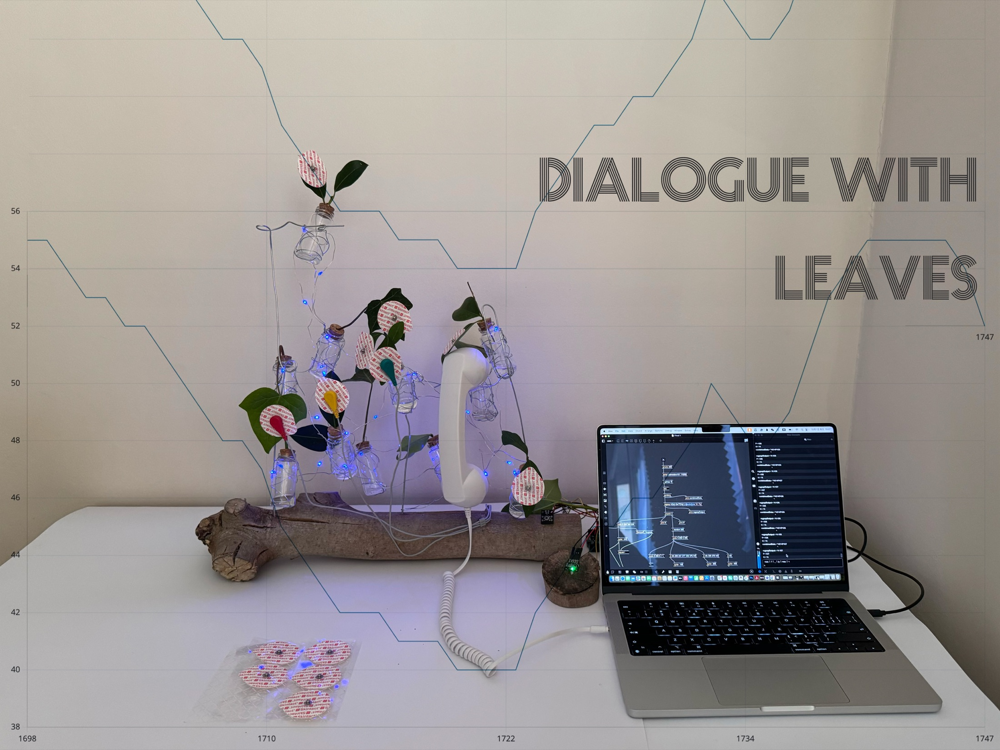
01 · Concept
Dialogue with Leaves treats sensing technology as a mediator rather than a measuring instrument. Electrodes, pulse sensing, illumination, and sound make normally invisible biological fluctuations perceptible without claiming to translate them into a literal plant language.
The sculptural form brings domestic and organic materials together: plant cuttings sit in glass vessels attached to a found branch, while a telephone receiver invites close listening. The familiar act of making a call becomes an intimate encounter with a living system.
How might bodily and plant signals create a moment of attention, curiosity, and perceived relation between different living beings?
02 · Interaction
Two forms of input are brought into one responsive environment. The installation does not present the data as a medical diagnosis; it uses changing values as material for an audiovisual experience.
Electrodes connect with the leaves while a pulse sensor captures the participant’s heart-rate signal.
Arduino receives and organises the changing sensor values before sending them to the computer.
Max/MSP monitors and maps the incoming data into parameters for sound and responsive illumination.
The participant listens through the telephone receiver and observes light travelling through the installation.
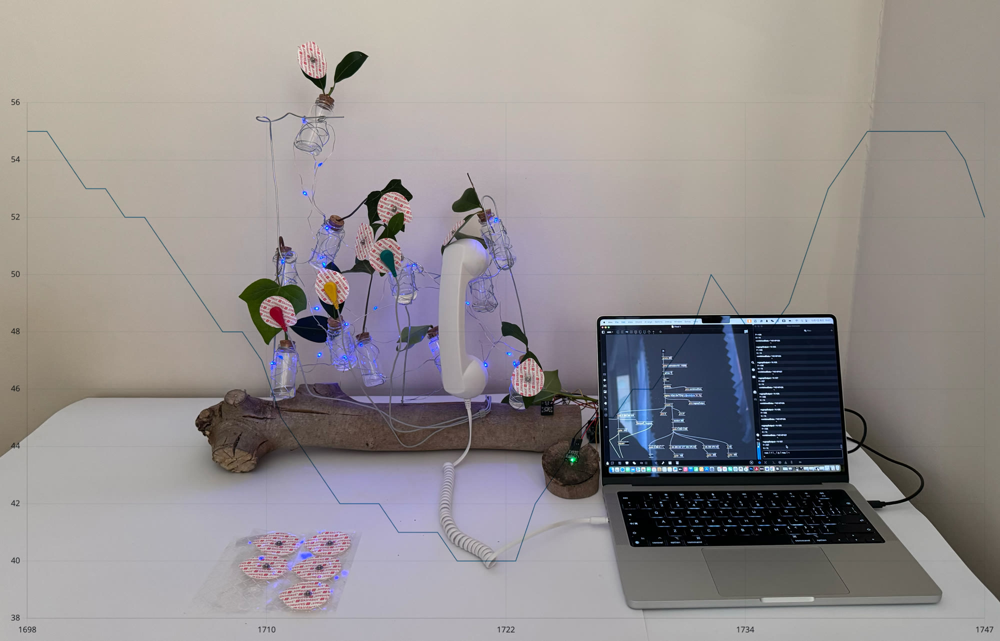
03 · Materials & Technology
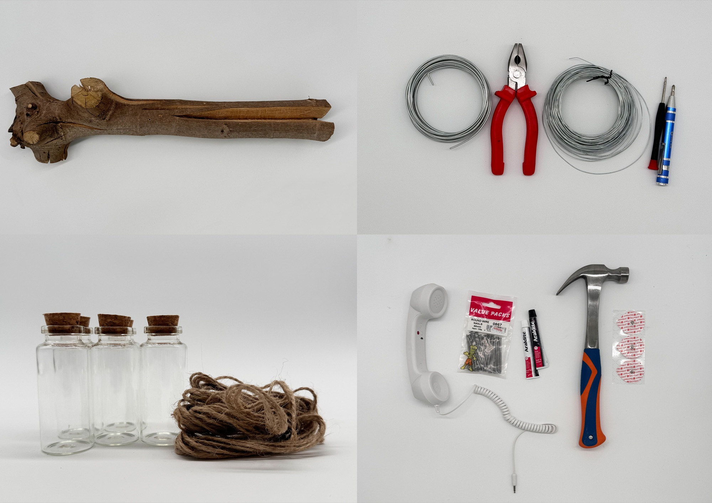
Found branch — provides the primary sculptural base for the installation.
Steel wire · pliers · awl — shape, pierce, and secure the supporting framework.
Glass vessels · cork stoppers · jute twine — hold the plant cuttings and bind the vessels to the branch.
Telephone receiver · round-wire nails · epoxy adhesive · hammer · electrode pads — form and secure the listening and contact elements.
Electronic Components
Three core components capture biological changes, organise the incoming values, and pass them to the audiovisual system.
Receives readings from both sensors and sends the organised values to Max/MSP through serial communication.
Capture small fluctuations in the plant's electrical activity through electrodes attached to its leaves.
Uses optical sensing to measure the participant's pulse as a second stream of real-time biological data.
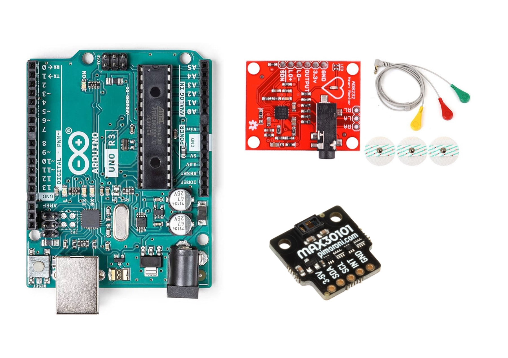
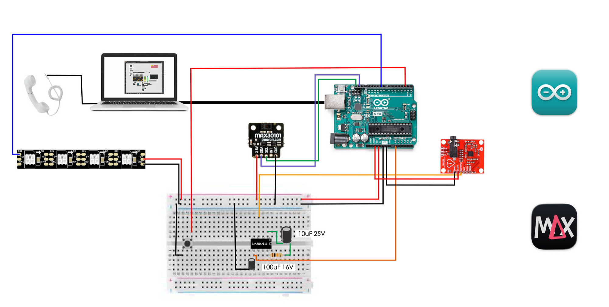
Wiring Logic
Arduino Uno acts as the central bridge. The electronic modules share a common ground, allowing the two sensor streams to be read together before they are mapped into light and sound.
The AD8232 is powered from the Arduino and sends its conditioned analogue output to an analogue input. Electrodes attached to the leaves provide the changing source signal.
The MAX30101 connects through 3.3 V, ground, SDA, and SCL. Its I²C connection supplies optical pulse values from the participant.
Firmware created in the Arduino IDE reads both inputs and sends the combined values to the computer via USB serial. Max/MSP parses and maps the incoming data.
A digital data line controls the addressable LED strip. Max/MSP generates the sound response, while the LM386 breadboard circuit supports playback through the telephone receiver.
04 · Making Process
The project developed through parallel experiments in sculptural construction, signal sensing, serial communication, and audiovisual mapping.
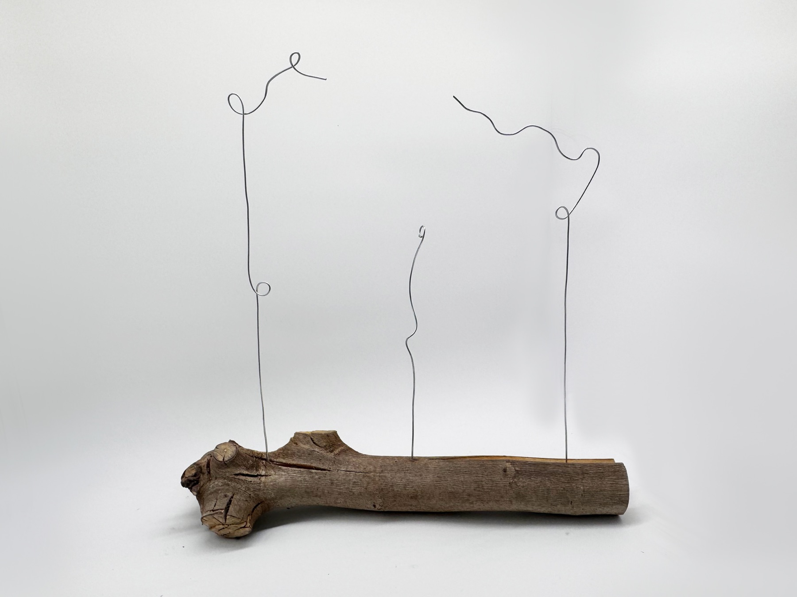
Steel wire was bent around the found branch to test the height, balance, and possible positions of the suspended vessels.
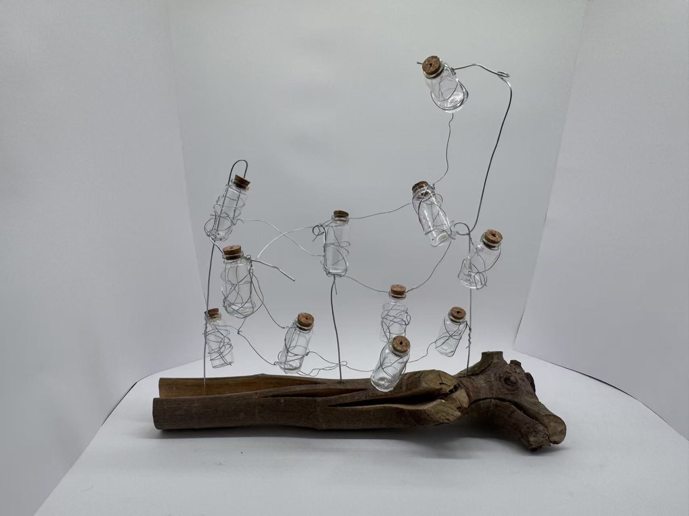
Glass vessels were wrapped and suspended within the wire framework, allowing the composition to be adjusted before living material and electronics were added.
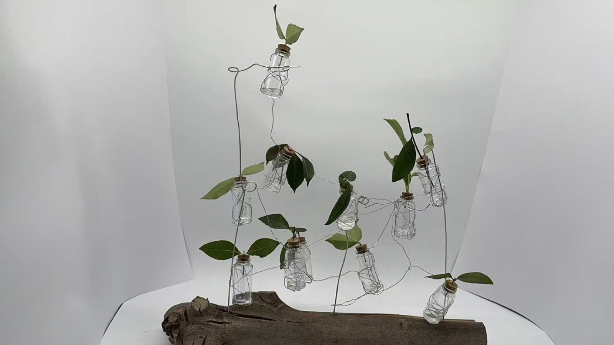
Plant cuttings were introduced to test spacing, weight distribution, and how organic forms changed the sculpture's silhouette.
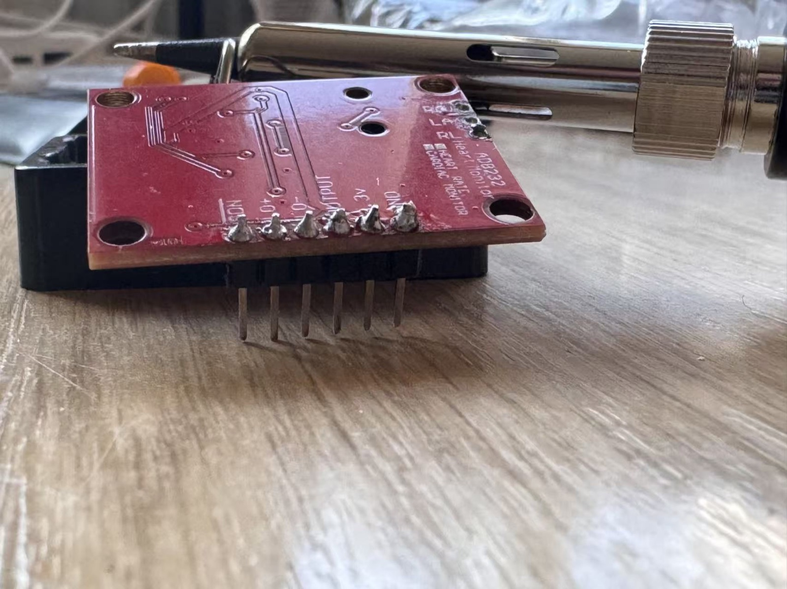
Header pins were soldered onto the AD8232 module to create reliable power, ground, and analogue-signal connections.
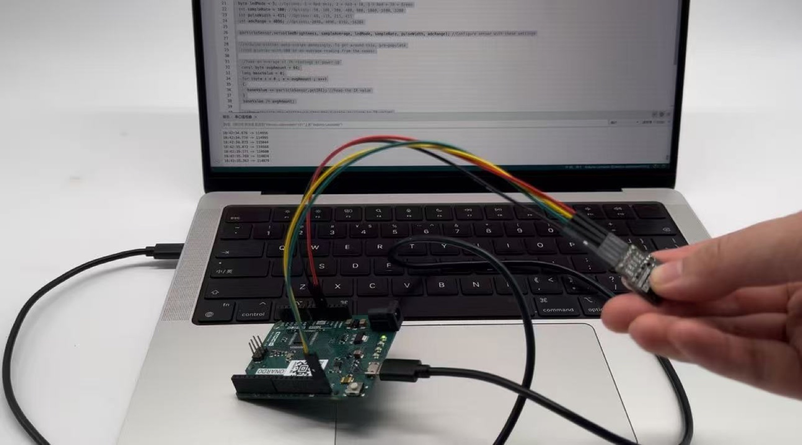
The MAX30101 was connected to Arduino and checked through live serial readings before being integrated into the installation.
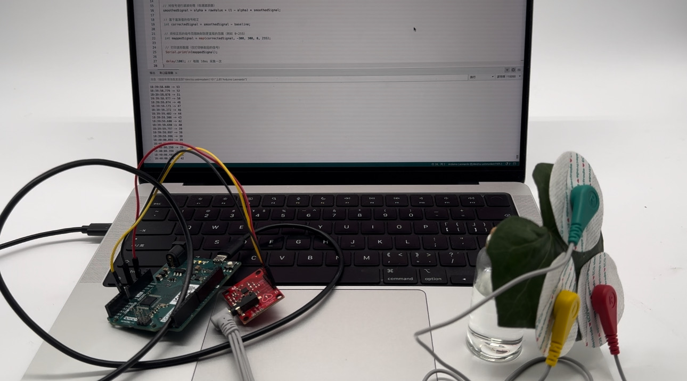
Electrodes were attached to leaves while Arduino monitored changing values and the stability of the input.
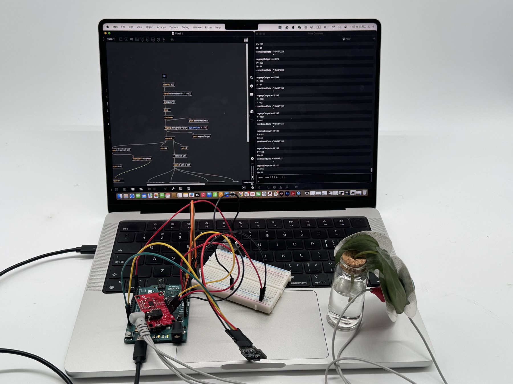
Incoming serial values were parsed in Max/MSP and mapped to variations in sound and responsive illumination.
05 · Project Film
A short walkthrough of the installation, its materials, and the interaction between plant sensing, human pulse, sound, and light.
06 · Reflection
This exploratory prototype shifted my attention from representing biological data accurately to designing the conditions for careful listening. Its exposed connections and fragile materials make the system’s mediation visible rather than presenting technology as an invisible or neutral translator.
Future development could compare different mappings of plant and participant signals, document longer interactions, and examine how participants interpret agency, responsiveness, and connection within the installation.
07 · Reference
This paper provided a conceptual reference for considering the plant as a responsive signalling organism. In this artwork, that perspective is used as a point of departure for sensory exploration rather than as evidence of direct plant-human communication.